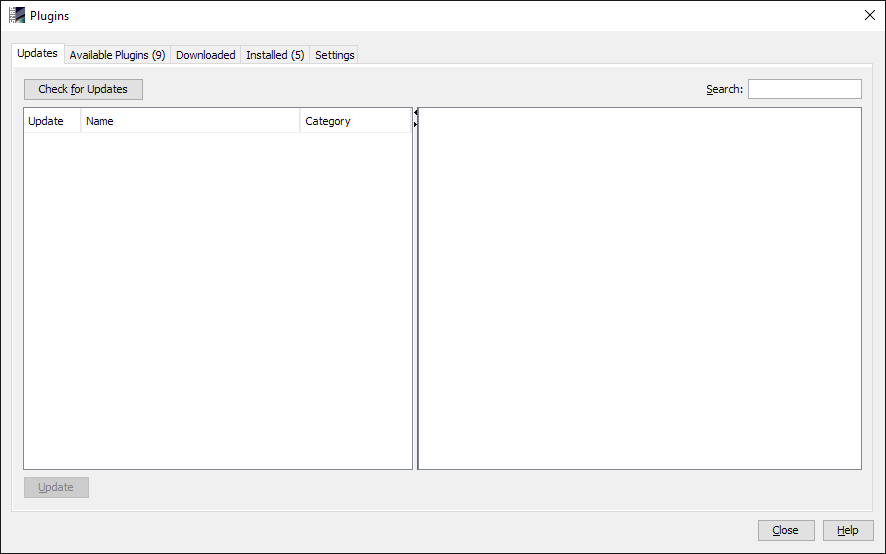
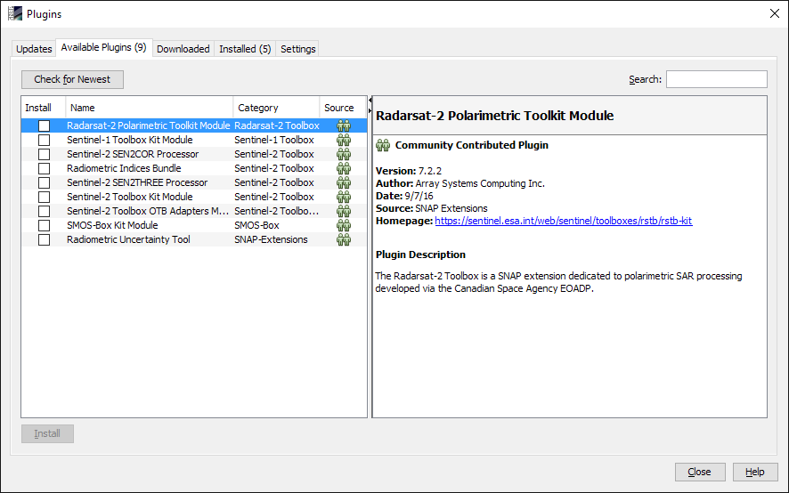
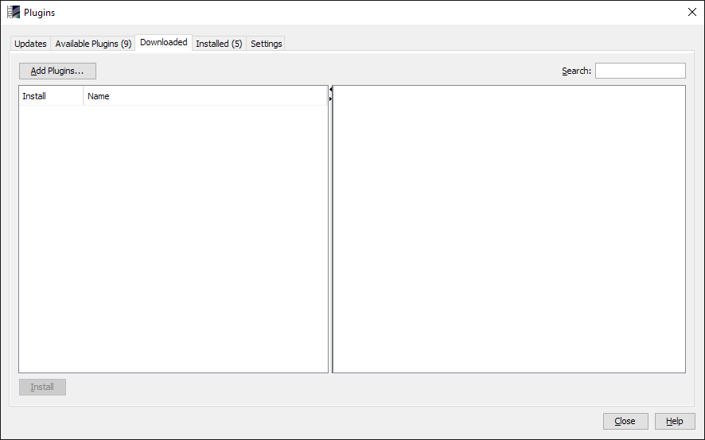
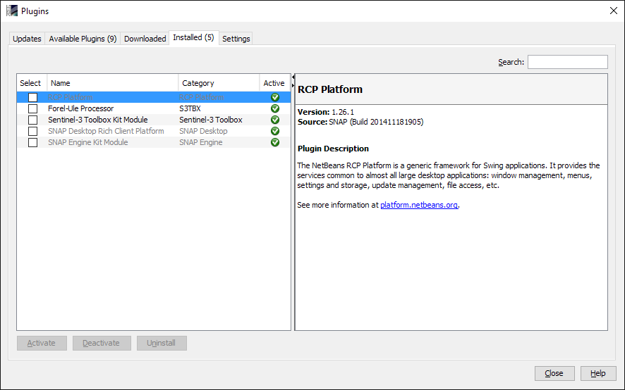

| Plugins | |
List all the possible updates base on their names and category. After selecting any of the required plugins then the update button at the left side is clicked.
All the plugins that are not installed will be listed. The check box allowed multiple selections for installation. At the right include the description of the selected plugin.
All the new The users have the flexibility to install plugins from the local machine, by just clicking on Add plugins button at the top left corner. Then selects the required plugins.
This is very importance because it enables the users to get all the installed plugins and also provide the possibility to Activate, Deactivate and uninstall.
The users can add, remove and edit the updating centers, where the updates and new plugins notifications are automatic notified, base on the time interval specified. The advanced setting enables the users the set the location where the plugins will be install on the local machine.